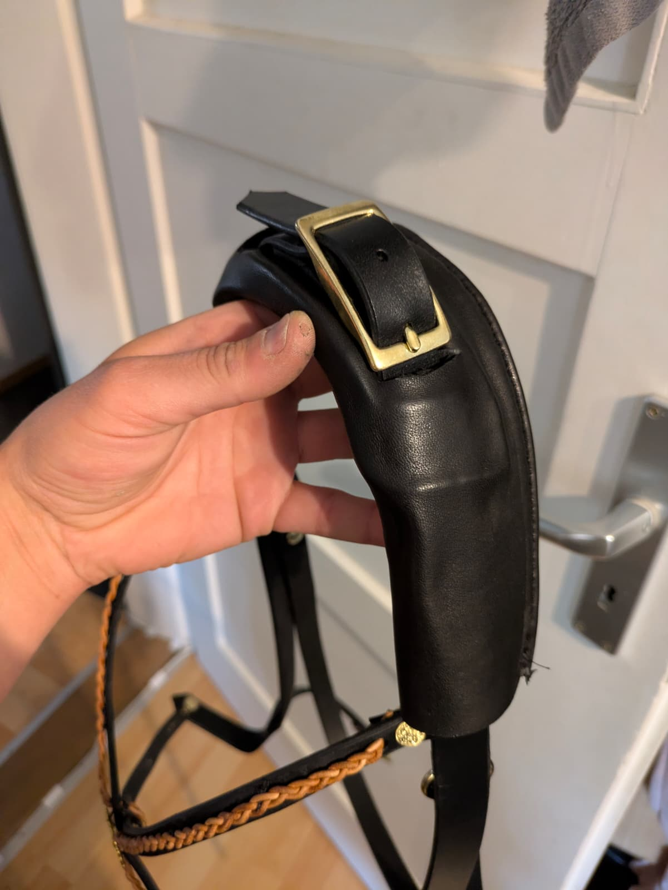

Produkte & Leistungen
Alles in Handarbeit, alles individuell. Wenn ihr etwas braucht, das es so nicht gibt: fragt uns. Eure Ideen, unsere Lösungen.

Zäume ohne Druck auf den Pferdekopf
Unsere Spezialität: Zäume, die das empfindliche Genick und die Nervenbahnen am Pferdekopf entlasten. Das breite, gepolsterte Genickstück verteilt die Kräfte, statt sie auf einen Punkt zu bringen. Handgenäht aus hochwertigem Leder, mit Messingbeschlägen und auf Wunsch mit geflochtenem Stirnband.
Jeder Zaum wird individuell für euer Pferd gefertigt und angepasst.
Feine Details, ehrliche Handarbeit
Geflochtene Stirnbänder, Zierrosetten, sauber gesetzte Nähte: bei uns kommt das Stück erst aus der Werkstatt, wenn es passt und hält.

Hufglocken
Hufglocken aus Leder: robust, passgenau und schonend zur Fesse. Sie schützen Ballen und Hufeisen beim Reiten, auf der Weide und beim Transport. In verschiedenen Größen, auf Wunsch maßgefertigt.
Lederwaren jeder Art für Tiere
Halfter, Führstricke mit Lederanteil, Hundehalsbänder, Leinen, Geschirre und Sonderanfertigungen: wir fertigen Lederwaren für Pferde, Hunde und andere Tiere. Sagt uns, was ihr braucht, wir setzen es um.
Diebstahlschutz für Sättel
Sättel sind wertvoll und leider beliebtes Diebesgut. Unser Diebstahlschutz sichert euren Sattel wirksam gegen Langfinger, im Stall und unterwegs. Sprecht uns an, wir beraten euch zur passenden Lösung.
Leder-Reparaturen
Der Lieblingszaum ist gerissen, die Naht am Sattel offen, das Halfter durchgescheuert? Bevor ihr etwas wegwerft: bringt es zu uns. Wir reparieren Lederwaren fachgerecht, damit sie noch viele Jahre halten.
Pflegeprodukte
Gutes Leder verdient gute Pflege. Bei uns bekommt ihr ausgewählte Pflegeprodukte, die das Leder geschmeidig halten und vor Witterung schützen, samt ehrlicher Beratung, was euer Equipment wirklich braucht.
Pferde-Handling durch Miriam
Ruhiger, sicherer Umgang mit dem Pferd ist die Basis für alles. Miriam unterstützt euch mit Erfahrung und Gefühl: beim täglichen Handling, bei schwierigen Situationen und bei der Gewöhnung an neues Equipment.
Termine nach Absprache, meldet euch einfach telefonisch.